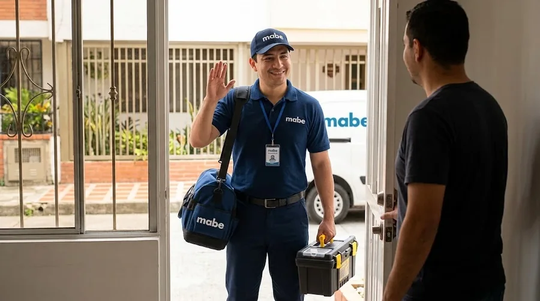

Imágenes de referencia de equipos Mabe.
Qué reparamos
Modelos y tipos de centro de lavado Mabe que atendemos a domicilio en Quito:
- Torres de lavado y secado eléctricas
- Torres de lavado y secado con secadora a gas
- Centros de lavado de carga superior
- Modelos con pantalla digital y códigos de error
Fallas comunes de centro de lavado Mabe
Cada falla tiene su propia página con causas, qué revisar y cuándo llamar.
- La torre no centrifuga Revisar pronto
Carga desbalanceada, amortiguadores, rodamientos o motor. - La secadora de la torre no seca Revisar pronto
Filtro de pelusas o ducto tapado, resistencia o termostato. - No desagua Revisar pronto
Filtro o manguera de desagüe tapados, o bomba con falla. - Vibra o se mueve al centrifugar Vigilar
Patas sin nivelar, carga mal repartida o piso irregular. - Gotea o bota agua Urgente
Mangueras flojas, filtro de desagüe mal cerrado o tina con fisura. - No enciende o se apaga en medio del ciclo Urgente
Tarjeta, tomacorriente, breaker o seguro de la tapa. - Hace ruido fuerte Revisar pronto
Rodamientos, correa, amortiguadores o un objeto en la tina. - Muestra un código de error Vigilar
Sensores, tarjeta o sistema de desagüe y puerta.
Servicios para centro de lavado Mabe en Quito
Reparar, dónde reparar, cuánto cuesta y más:
- Reparar el centro de lavado Mabe en Quito
- Dónde reparar el centro de lavado Mabe en Quito
- Cuánto cuesta reparar el centro de lavado Mabe en Quito
- Técnico de centros de lavado Mabe a domicilio en Quito
- Reparación de torres de lavado Mabe en Quito
- Mantenimiento de centros de lavado Mabe en Quito
- Instalación de centros de lavado Mabe en Quito
- Repuestos para centros de lavado Mabe en Quito
- Servicio técnico de centros de lavado Mabe en Quito
Qué hacemos en la visita
Vamos a tu casa, probamos el centro de lavado en su lugar de uso, identificamos la causa y te explicamos qué tiene antes de tocar nada.
- Diagnóstico de la falla
- Costo confirmado antes de reparar
- Reparación y prueba de funcionamiento
- Recomendaciones para que no se repita
Mantenimiento para que el centro de lavado dure más
- Limpia el filtro de pelusas en cada ciclo de secado.
- Limpia el ducto de la secadora al menos una vez al año.
- Nivela las patas y deja espacio para ventilación.
- No sobrecargues el tambor de la lavadora.
- Revisa las mangueras de agua cada año.
- Deja la tapa abierta un rato después de lavar para que se seque la tina.
Antes de llamar: seguridad y datos
Seguridad primero
Cierra la llave de agua y desconecta la torre antes de revisar filtros, mangueras o el ducto. Si huele a quemado, desenchúfala.
Qué enviarnos por WhatsApp
Para orientarte más rápido, envíanos marca y modelo (la etiqueta suele estar atrás o en el borde de la tapa), cuál de los dos equipos falla y el código de error si lo hay. Una foto de la etiqueta y un video corto de la falla ayudan mucho.
Particularidades de Quito
En apartamentos de Quito las torres suelen ir en espacios reducidos: deja siempre un espacio mínimo para ventilación y revisa que el ducto no quede doblado.
Dónde atendemos: centro de lavado Mabe por zona
Elige tu barrio para ver el servicio a domicilio de centro de lavado Mabe en tu zona:
Norte de Quito
Centro de Quito
Sur de Quito
Valles de Quito
Preguntas frecuentes
¿Reparan centros de lavado o torres Mabe?
Sí, atendemos los centros de lavado Mabe en casas y apartamentos de Quito.
¿Por qué mi torre Mabe no seca pero sí lava?
Casi siempre es el filtro de pelusas o el ducto tapado; si ya los limpiaste, puede ser la resistencia o el termostato.
¿Atienden torres en apartamentos?
Sí. Coordinamos acceso con la administración del edificio.
¿Se puede reparar la lavadora y la secadora de la torre en la misma visita?
Si ambas tienen falla, las diagnosticamos en la misma visita y te damos el costo antes de reparar.
¿Dan garantía por la reparación?
Pregunta por la garantía al coordinar la visita: te confirmamos por WhatsApp las condiciones de la reparación antes de empezar.